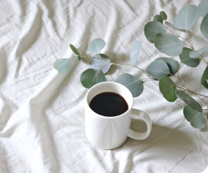

It’s like home where you are

Always like afternoon
Choose your flavor

Step 1. SWEETNESS
Contrary to its bitter reputation, the better the coffee, the sweeter it typically tastes. The presence of sweetness is, in fact, one of the reasons we prefer Coffea arabica to Coffea canephora (aka robusta),its more acerbic cousin. With every coffee you drink, ask yourself what kinds of sweetness you detect, whether fresh fruit, honey, or darker caramel or molasses.

Step 2. BODY
This is the weight and feel of the coffee on your tongue, one of the easiest qualities for new tasters to grasp. Does the coffee feel light like skim milk or heavy like whipping cream? How does the coffee dose and brew method affect a coffee’s body?

Step 3. ACIDITY
we’re talking about the quality of each coffee’s acidity. Does it have a mild melon-like tang or is its tartness more lemon-like? Is it muted and barely perceptible, as in a dark-roasted chocolaty blend? Roast level affects our perception of a coffee’s acidity. The darker the roast, the more we taste the effect of the roast (like more caramelized sugars), and the less we taste the juicy or tart aspects we collectively think of as acidity.
Choose your method
POUR OVER
Step 1. Bring at least 600 grams (20 oz) of water to a boil.
Step 2. Enjoy the nuanced flavor of a single-origin coffee that is lightly roasted, we recommend less coffee: 23 grams for every 350 grams water.
Step 3. Place a filter in the dripper. we recommend wetting the filter with hot water and then dumping the water before proceeding with brewing.
Step 4. Add the ground coffee to the filter and gently tap it to level the surface of the grounds. Place the brewer on a carafe or cup, place this entire set-up onto a digital scale, and set it to zero.
Step 5. There will be four pours total for this coffee preparation. This is the first, and the most magical, because it is when you will see the coffee “bloom.” As hot water first hits the grounds, Co2 is released creating a blossoming effect—the grounds will rise up en masse. Start a timer. Begin pouring water slowly over the coffee, starting at the outer rim and moving in a steady spiral toward the center of the grounds. Stop pouring when the scale reaches 60 grams. Make sure all the grounds are saturated, even if you need to add a little water. The pour should take about 15 seconds. Give the coffee an additional 30 seconds to drip before moving on to the second pour.

MOCHA POT
Step 1. Grind about 20-22 grams of coffee, about as finely as you would for a shot of espresso.
Step 2. Boil water, and fill the bottom half of your Mocka pot with water that’s fresh off the boil.
Step 3. Fill the pot’s filter basket with the ground coffee, and give it a shake to settle the grounds evenly. Now place it into the bottom compartment.
Step 4. Screw on the Moka pot’s spouted top. Caution! The bottom chamber will be hot.
Step 5. Place the pot on a stove set to medium heat.
Step 6. When the water in the bottom chamber approaches a boil, the pressure will push a stream of coffee slowly and methodically through the upper chamber. If it explodes upward, your water’s too hot, if it burbles lethargically, turn up your flame. You know it’s done when you hear a hissing, bubbling sound.

FRENCH PRESS
Step 1. Bring enough water to fill the French press to a boil. For a 17-oz press, you'll need about 350 grams (12 ounces).
Step 2. While the water is heating, grind your coffee. French press coffee calls for a coarse, even grind. We recommend starting with a 1:12 coffee-to-water ratio. If you're using 350 grams of water, you’ll want 30 grams of coffee.
Step 3. To start, gently pour twice the amount of water than you have coffee onto your grounds. For example, if you have 30 grams of coffee, you’ll want to start with 60 grams of water.
Step 4. Give the grounds a gentle stir with a bamboo paddle or chopstick. Allow the coffee to bloom for 30 seconds.
Step 5. Pour the remaining water and place the lid gently on top of the grounds. Don’t plunge just yet. Let the coffee steep for four minutes. Four. Don’t guess.
Step 6. Gently remove your French press from the scale and place it on your counter. Press the filter down. If it’s hard to press, that means your grind is too fine; if the plunger “thunks” immediately down to the floor, it means your grind is too coarse. The sweet spot, pressure-wise, is 15–20 pounds. Not sure what this feels like? Try it out on your bathroom scale.
When you’ve finished pressing, serve the coffee immediately. Don’t let it sit, as this will cause it to continue brewing and over-extract.
you need extra
and
Make it what you want